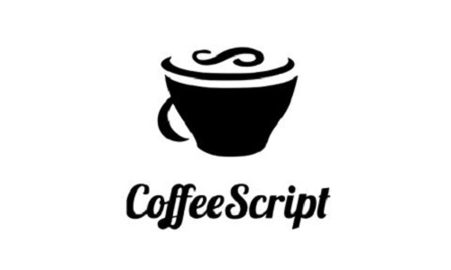
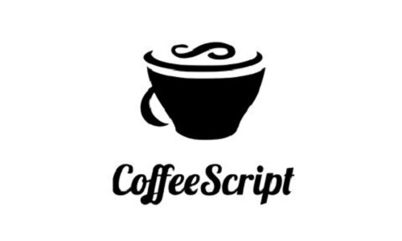

<О языке>
Изначально JavaScript был создан, чтобы «сделать веб-страницы живыми». Программы на этом языке называются скриптами. Они могут встраиваться в HTML и выполняться автоматически при загрузке веб-страницы. Скрипты распространяются и выполняются, как простой текст. Им не нужна специальная подготовка или компиляция для запуска. Это отличает JavaScript от другого языка – Java.
Сегодня JavaScript может выполняться не только в браузере, но и на сервере или на любом другом устройстве, которое имеет специальную программу, называющуюся «движком» JavaScript. У браузера есть собственный движок, который иногда называют «виртуальная машина JavaScript».
Интересный факт
Почему JavaScript? Когда JavaScript создавался, у него было другое имя – «LiveScript». Однако, язык Java был очень популярен в то время, и было решено, что позиционирование JavaScript как «младшего брата» Java будет полезно. Со временем JavaScript стал полностью независимым языком со своей собственной спецификацией, называющейся ECMAScript, и сейчас не имеет никакого отношения к Java.
<JS в браузере>
Что может JavaScript в браузере?✔️
Современный JavaScript – это «безопасный» язык программирования. Он не предоставляет низкоуровневый доступ к памяти или процессору, потому что изначально был создан для браузеров, не требующих этого. Возможности JavaScript сильно зависят от окружения, в котором он работает. Например, Node.js поддерживает функции чтения/записи произвольных файлов, выполнения сетевых запросов и т.д. В браузере для JavaScript доступно всё, что связано с манипулированием веб-страницами, взаимодействием с пользователем и веб-сервером.
Что не может JavaScript в браузере?❌
Возможности JavaScript в браузере ограничены ради безопасности пользователя. Цель заключается в предотвращении доступа недобросовестной веб-страницы к личной информации или нанесения ущерба данным пользователя. Примеры таких ограничений включают в себя: JavaScript на веб-странице не может читать/записывать произвольные файлы на жёстком диске, копировать их или запускать программы. Он не имеет прямого доступа к системным функциям ОС. Современные браузеры позволяют ему работать с файлами, но с ограниченным доступом, и предоставляют его, только если пользователь выполняет определённые действия, такие как «перетаскивание» файла в окно браузера или его выбор с помощью тегов.
<Что делает JS особенным?>
Сегодня JavaScript может выполняться не только в браузере, но и на сервере или на любом другом устройстве, которое имеет специальную программу, называющуюся «движком» JavaScript. У браузера есть собственный движок, который иногда называют «виртуальная машина JavaScript».
три сильные стороны JavaScript:
- ✔️Полная интеграция с HTML/CSS.
- ✔️Простые вещи делаются просто.
- ✔️Поддерживается всеми основными браузерами и включён по умолчанию.
JavaScript – это единственная браузерная технология, сочетающая в себе все эти три вещи. Вот что делает JavaScript особенным. Вот почему это самый распространённый инструмент для создания интерфейсов в браузере.
<Языки «над» JavaScript>
Синтаксис JavaScript подходит не под все нужды. Разные люди хотят иметь разные возможности. Это естественно, потому что проекты разные и требования к ним тоже разные. Так, в последнее время появилось много новых языков, которые транспилируются (конвертируются) в JavaScript, прежде чем запустятся в браузере. Современные инструменты делают транспиляцию очень быстрой и прозрачной, фактически позволяя разработчикам писать код на другом языке, автоматически преобразуя его в JavaScript «под капотом».
Примеры таких языков:
 

<Итог>
✔️JavaScript изначально создавался только для браузера, но сейчас используется на многих других платформах.
✔️ Сегодня JavaScript занимает уникальную позицию в качестве самого распространённого языка для браузера, обладающего полной интеграцией с HTML/CSS.
✔️Многие языки могут быть «транспилированы» в JavaScript для предоставления дополнительных функций. Рекомендуется хотя бы кратко рассмотреть их после освоения JavaScript.
<Полезные материалы>
-
🖥️JAVASCRIPT.RU
Ресурс с подробной и доступной информацией, посвящённой языку JavaScript. Курс разделен на темы с заданиями в конце каждой.
-
🖥️JavaScript30
Сайт с множеством бесплатных руководств и уроков по JavaScript.
-
🖥️JSforCats
Это руководство для начинающих в изучении JavaScript, которое поможет вам ознакомиться с основными функциями, библиотеками, структурами данных и другими основами JavaScript.
-
🖥️codecademy
Codecademy - одна из лучших платформ для изучения JavaScript, которая среди всего прочего предоставляет сертификат об окончании курса.
-
🖥️freeCodeCamp
Ресурс с подробной и доступной информацией, посвящённой языку JavaScript. Курс разделен на темы с заданиями в конце каждой.